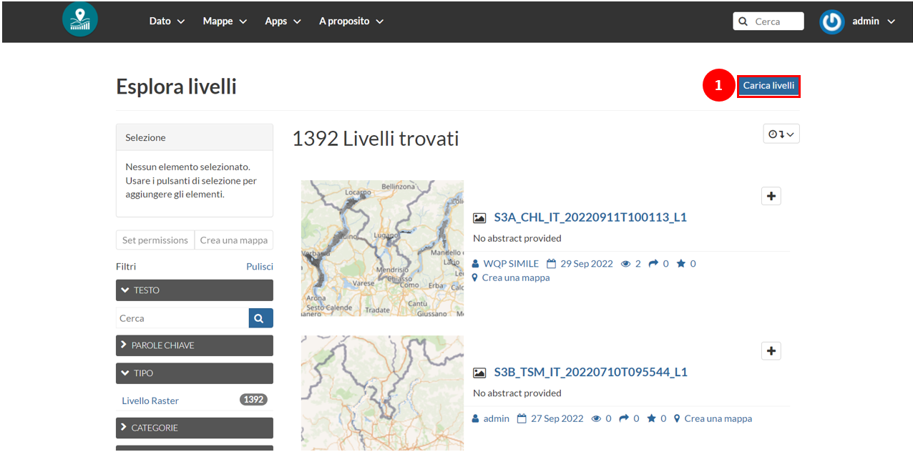
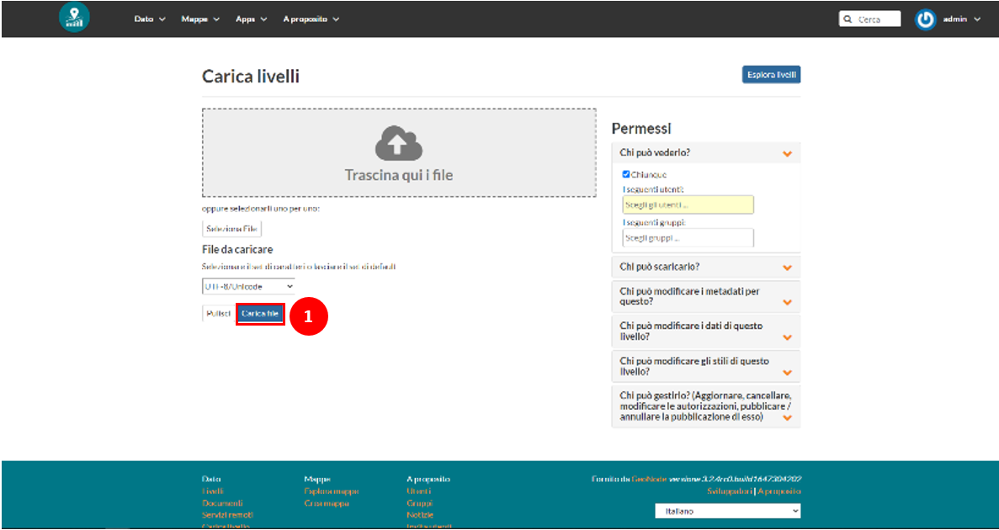
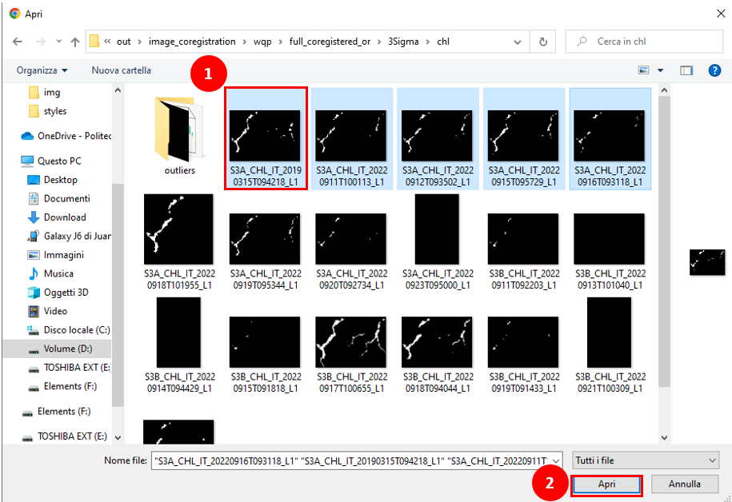
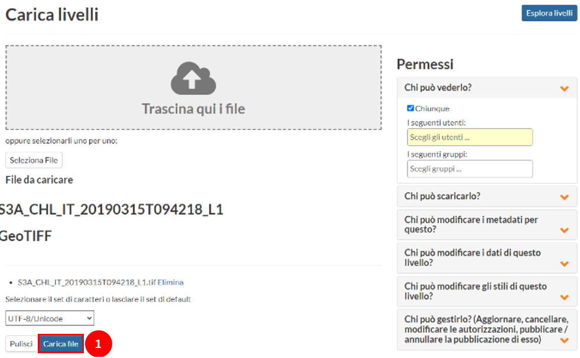
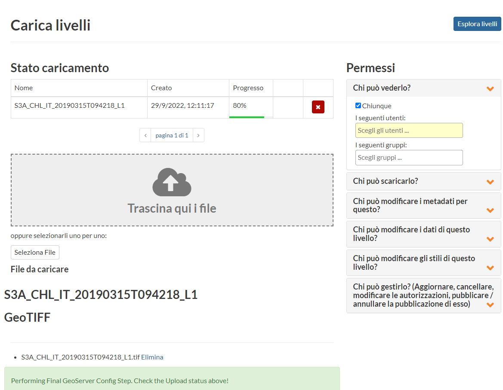
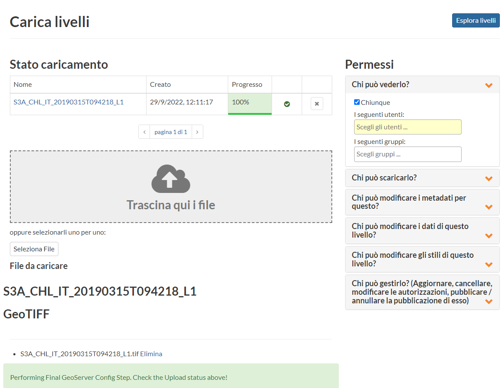
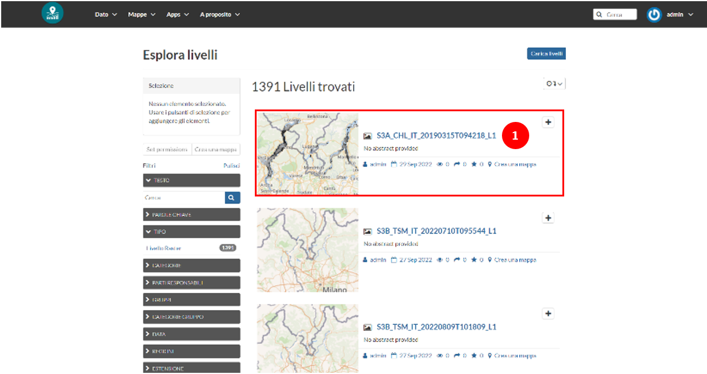

WQP Maps Upload - Layers Page
Contents
WQP Maps Upload - Layers Page#
Once the users have accessed with the proper credentials, and have been granted with the proper permissions, they will be allowed to proceed with the upload of the WQP maps.
The first step, is to reach the layers page (see Fig. 6). To reach the Layers Page, the user must click on tab on the top of the window Data ￫ Layers.
Layers Page#
On the Layers page, a list of the available spatial datasets will be prompted. The layers presented in the list can be explored, visualized and downloaded from the available datasets (if the data provider allows it to).
{kind=link}

Fig. 6 Layers Page#
Note
Note: the visibility of the datasets may be controlled by the data provider. For more information on how to edit the permissions, the user can refer to section Users management.
To proceed with the data upload, click on the Layer Upload button to go to the upload page (see Fig. 7).
Upload page#
To begin with, for the datasets upload, click on the Select File.
Here, there is an example of the data upload of a raster file. The dataset corresponds to a Water Quality Parameter (WQP) map.
{kind=link}

Fig. 7 Upload page#
Attention
GeoNode enables users the upload vector and raster data in their original projections. There is broad support for vector data formats (such as ESRI shapefiles, KML files, GeoJSON and others). Raster data, such as satellite images and other datasets, can be uploaded in GeoTIFF format.
When the user triggers the Select File button, a prompt of an explorer window will appear. In this window, search for the file’s location, select it and click open.
{kind=link}

Fig. 8 Select data for upload#
Note
It is possible to select multiple files for the upload if wanted. Hold the ctrl key while clicking on the different files to choose them.
The sample files for working in this tutorial is ‘S3A_CHL_IT_20190315T094218_L1’.
WQP maps follow a specific standard providing additional information about the product. In this example, it is possible to retrieve the subsequent metadata of the file:
S3A: “Sentinel-3A”
CHL: “Chlorophyll-a”
IT: “EPSG:32632”
20190315T094218: “2019-03-15 09:42:18”
Derived from L1 product
Note
Each WQPs maps are uploaded using a specific naming convention. The layers regarding the WQP maps account for the satellite used in the acquisition (L8: “Landsat 8”, S3A: “Sentinel 3A” and S3B: “Sentinel 3B”), the typology of the map (CHL: “Chlorophyll-a”, TSM: “Total Suspended Matter”, LSWT: “Lake Surface Water Temperature”), the Coordinate Reference System (IT: “EPSG:32632”, CH: “EPSG:2056), the time of acquisition of the image and the level of the image.
Once the image is selected, the dataset’s name will appear under the list of Files to Upload (presented along with the format of the file; see Fig. 9). Then, you can proceed with the layer upload by clicking on Upload File.
{kind=link}

Fig. 9 Execute the layer(s) upload#
It is possible to control the upload status with the summary table prompted after starting the file upload (see Fig. 10).
{kind=link}

Fig. 10 Check the layer upload status#
When the upload into the platform storage is complete, the progress bar for the corresponding data will reach 100% (see Fig. 11).
{kind=link}

Fig. 11 Complete upload of layer into map server and app database#
Verify data upload#
To verify the correct layer upload, visit the Layers Page and search for the uploaded dataset. By default, the Layer list the layers in the order of upload.
{kind=link}

Fig. 12 New layer added in layers page#